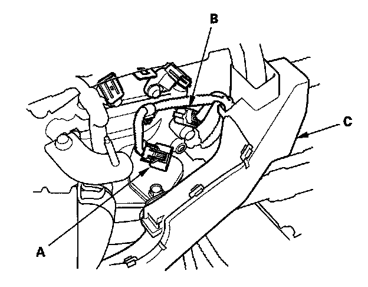
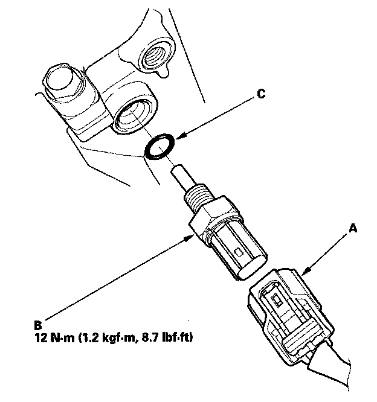

ECT Sensor 1 Replacement
ECT Sensor 1 Replacement1. Drain the engine coolant.
2. Remove the air cleaner.

3. Disconnect the CMP sensor A connector (A), and the CMP sensor B connector (B).
4. Remove the harness cover (C).

5. Disconnect the ECT sensor 1 connector (A).
6. Remove ECT sensor 1 (B).
7. Install the parts in the reverse order of removal with a new O-ring (C), then refill the radiator with engine coolant.